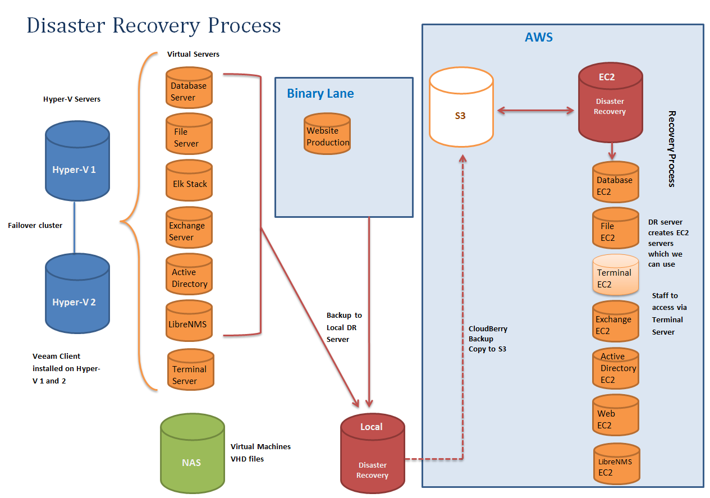

There is an old saying that "there are two types of sysadmins, those that do make backups and those that will make backups". Hopefully there are not too many of the second group. But backing up the data is only part of the picture, you also need to think about how you are going to restore it for a full disaster recovery (DR) plan.
Unfortunately a DR solution can be costly, our previous strategy we bought a server with enough hard disk space, RAM and CPU grunt to hold our off site backups and to spin up all our VMs to replicate our production environment in the event of a disaster. I can't remember the exact price of the server but it was in the tens of thousands of dollars plus the ongoing cost of hosting it in a data center somewhere. It cost almost as much as our production environment and sat there not doing much1 for five years before being decommissioned.
Now I'm not saying it was a complete waste of money, had there been a disaster it would have been worth every cent. But for a small to medium sized organisation that's a huge upfront cost that I think can be avoided. This is where being able to purchase compute power on demand and separate from storage absolutely shines. It turns a huge capital expenditure into a small operational expenditure that is only paid in the event of a disaster (or during DR testing).
So when I was asked to do up the specs for our new DR server I though about using a cloud2 hosting provider who could give us storage and only pay for CPU and RAM when we needed it. We looked at a few hosting providers, including Amazon, Azure, binary lane and some local providers who are not really "Cloud" vendors but would provide us storage and has spare physical machines as needed. I think any of them could have done it but in the end we settled on Amazon.
It saved us a huge amount of money and worked very well. So how did we do it?

In this diagram we don't backup the Terminal Server, instead we treat it like a desktop machine and rebuild it.
Implementation
Local Backup
We use Veeam Backup and Replication3 to backup our servers to a local backup server. Nothing fancy about that except a few small caveats; disks need to be either VHD or VMDK to work with ec2-import-volumne and not VHDX, VDI, etc.. also hard drives can't be over 1TB each as the import can't handle larger files. Lastly it's best to have a separate jobs for each server so if you have 5 servers, setup 5 seperate backup jobs (or even more, if you wanted you could setup one job for each disk, so a single server with 3 VHDs would have 3 backup jobs). This will create separate backup files and allow you to parallelize your restore process.
Offsite Storage
Then we push a copy of our backups into S3, we used Veeam Cloud Backup to push our backups off, but that got discontinued so now we are using CloudBerry Backup4 which as far as I can tell is exactly the same product but rebadged5.
Restore Procedures
So far it's all been fairly standard but the restore is where it gets interesting. First we setup one EC2 and installed all the required software for a restore onto it; Veeam, CloudBerry Backup, and the AWS Commandline tools setup with an API key. We setup ours with a fairly small hard drive (EBS) in our case we set it to 40GB.
Once it's been setup and ready to do a restore we can shut it down and make a snapshot to create an Amazon Machine Image (AMI). This way if we want to restore 5 servers, we can spin up 5 DR servers to start the recovery and we can attach larger hard drives to each as a scratch disk to use for the restore (you will want about twice the size of the disks you are restoring).
First you pull the Veeam files (.vbm, .vbk and .vib's) out of S3 onto the scratch disk with CloudBerry Backup and then import that into Veeam Backup and Replication to convert it back to a .vhd file.
Once you have a .vhd file you can import them into AWS, you can import bootable disks with ec2-import-instance will create a new EC2 and you can import volumes with ec2-import-volumne which will create a EBS (virtual hard disk) that can be attached to
ec2-import-instance D:\Database_Severver_C.vhd -t t2.medium -f vhd -a x86_64 -b import-ebs-volumes --subnet subnet-1234567a -o %AWS_ACCESS_KEY% -w %AWS_SECRET_KEY% -p Windows -z ap-southeast-2a --region ap-southeast-2
ec2-import-volume D:\Database_Severver_D.vhd -f vhd -z ap-southeast-2a -o %AWS_ACCESS_KEY% -w %AWS_SECRET_KEY% -b import-ebs-volumes --region ap-southeast-2
All in all I'm fairly happy with how it all works. We do new full backups every 3 months (run on a Friday with each server is out of step to give us the weekend to upload the new full backup) and then daily incrementals. All backups are kept in S3 and then migrated to glacier after 12 months. We only pay for the storage in S3 which is relatively cheap (It costs less per month than our data center hosting for the old server did with no upfront cost) and during our DR tests everything has come back up fairly well.
-
Other than the occasional DR test which where less frequent than they should have been I suspect it never peaked over 1% CPU and 5% RAM usage. ↩
-
I usually try to avoid the word "Cloud" because I find it an ambiguous sales term but sometimes it's hard. ↩
-
I'm sure it would work with other backup software, although we tried ShadowProtect which is good but didn't work because of the way it modifies .vhd files on restore to do their "Hardware independent restore". ↩
-
Veeam gave us a free license for CloudBerry Backup when they discontinued their version. ↩
-
I suspect it may have been the otherway around, Veeam Cloud Bacup was just CloudBerry Backup that had been rebadged with the Veeam logo. ↩